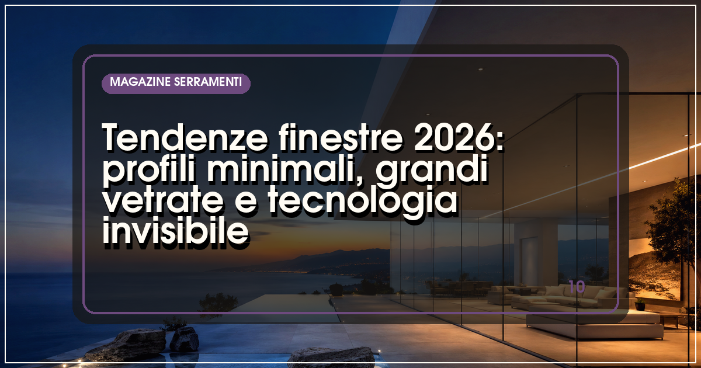
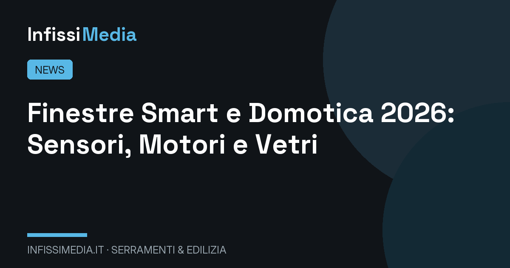
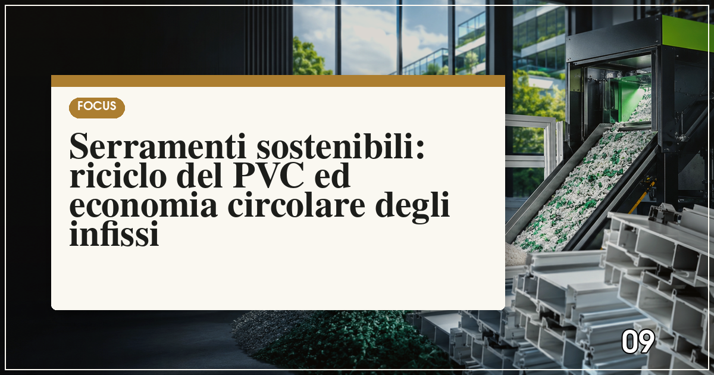
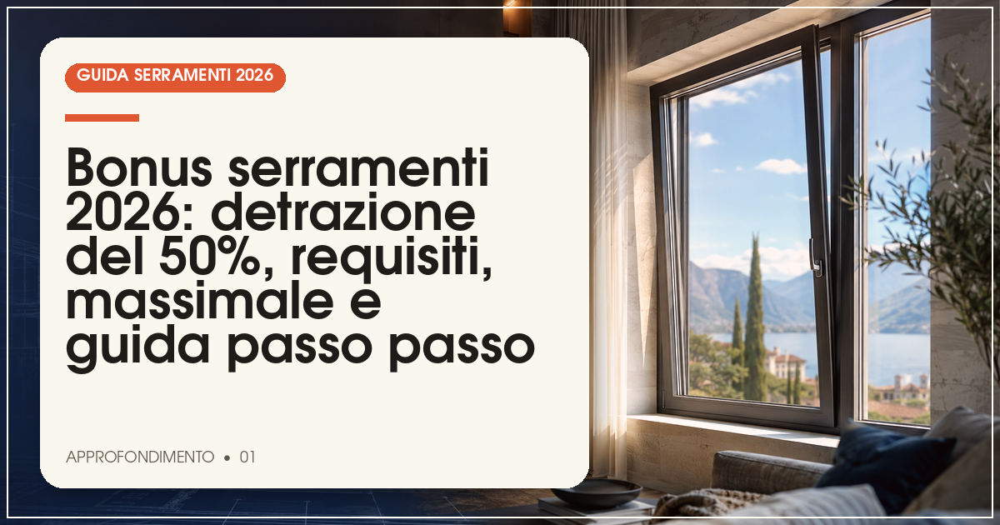
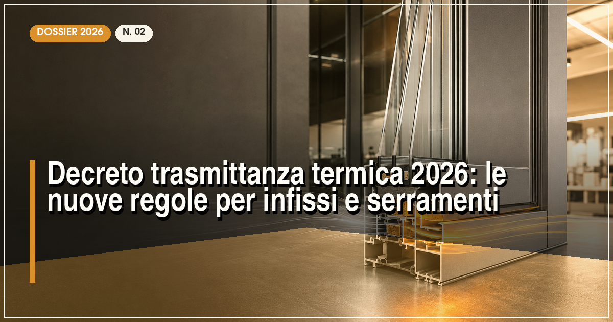

Tendenze finestre 2026: profili minimali, colori scuri e grandi vetrate
Dal nero opaco al legno naturale: come cambia l'estetica del serramento.
Attualità, tendenze e innovazione dal mondo dei serramenti e dell'edilizia: design, domotica, sostenibilità e tutto quello che cambia nel settore, spiegato in parole chiare.

Dal nero opaco al legno naturale: come cambia l'estetica del serramento.

Il serramento diventa intelligente: cosa è già realtà e cosa arriverà.

Cosa succede alle vecchie finestre e perché il PVC riciclato è una risorsa, non un rifiuto.

Massimali, trasmittanze limite, bonifico parlante e pratica ENEA: tutto per non perdere la detrazione.

Cosa cambia per i valori limite di trasmittanza e per l'accesso alle detrazioni fiscali.

Tra recupero edilizio e riqualificazione energetica: dove va il mercato italiano.

Qualità, innovazione, assistenza e prezzo: il podio dei brand che contano davvero.

Internorm, Finstral, Oknoplast, Veka e Schüco a confronto: trasmittanza, profili, vetri e garanzie.

La direttiva europea sull'efficienza energetica degli edifici spiegata in parole semplici.